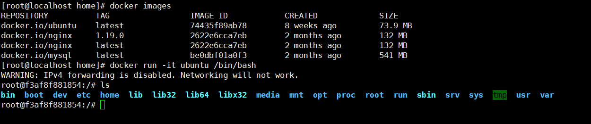
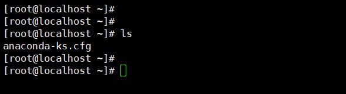
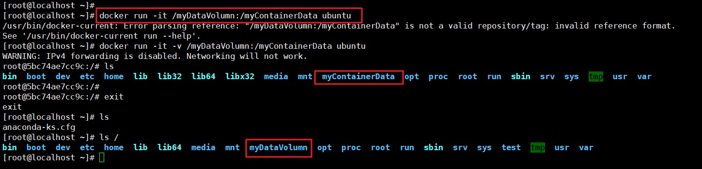
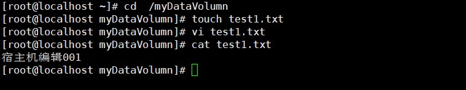
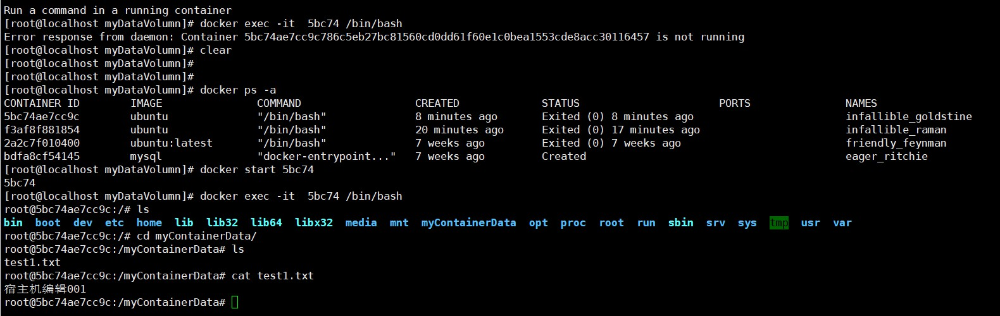

默认情况下，容器不使用任何 volume，此时，容器的数据被保存在容器之内，它只在容器的生命周期内存在，关闭并重启容器，其数据不会受到影响，但是删除Docker容器，数据将会全部丢失。当然，也可以使用 docker commit 命令将它持久化为一个新的镜像。
问题
- 不能在宿主机上很方便地访问容器中的文件。
- 无法在多个容器之间共享数据。
- 当容器删除时，容器中产生的数据将丢失。
数据卷
为了解决这些问题，docker 引入了数据卷(volume) 机制。数据卷是存在于一个或多个容器中的特定文件或文件夹，这个文件或文件夹以独立于 docker 文件系统的形式存在于宿主机中。数据卷的最大特定是：其生存周期独立于容器的生存周期。
使用数据卷的最佳场景
- 在多个容器之间共享数据，多个容器可以同时以只读或者读写的方式挂载同一个数据卷，从而共享数据卷中的数据。
- 当宿主机不能保证一定存在某个目录或一些固定路径的文件时，使用数据卷可以规避这种限制带来的问题。
- 当你想把容器中的数据存储在宿主机之外的地方时，比如远程主机上或云存储上。
- 当你需要把容器数据在不同的宿主机之间备份、恢复或迁移时，数据卷是很好的选择。
数据卷分类
Docker有两种类型的卷，每种类型都在容器中存在一个挂载点，但其在宿主机上位置有所不同;
- Bind mount volume（绑定挂载卷）：在宿主机上的路径要人工的指定一个特定的路径，在容器中也需要指定一个特定的路径，两个已知的路径建立关联关系
- Docker-managed volume（docker管理卷）： 只需要在容器内指定容器的挂载点是什么，而被绑定宿主机下的那个目录，是由容器引擎daemon自行创建一个空的目录，或者使用一个已经存在的目录，与存储卷建立存储关系，这种方式极大解脱用户在使用卷时的耦合关系，缺陷是用户无法指定那些使用目录，临时存储比较适合;
容器中添加数据卷
直接命令添加
直接命令添加指定宿主机和容器中的特定位置，创建绑定挂载卷。
命令：
1 | docker run -it -v /宿主机绝对路径目录:/容器绝对路径目录 镜像名 |
实例：
（1）首先，我们查看run一个Ubuntu镜像，查看容器中根文件夹：

（2）我们看一下现在宿主机的根文件夹

（3）以数据卷再开启一个Ubuntu容器
1 | docker run -it -v /myDataVolumn:/myContainerData ubuntu |

（4）我们现在在宿主机/myDataVolumn目录下 创建一个文件：text1.txt

（5）重启刚打开的Ubuntu容器，进入到/myContainerData目录下：

我们发现我们在宿主机上的操作，已经更新到容器中了